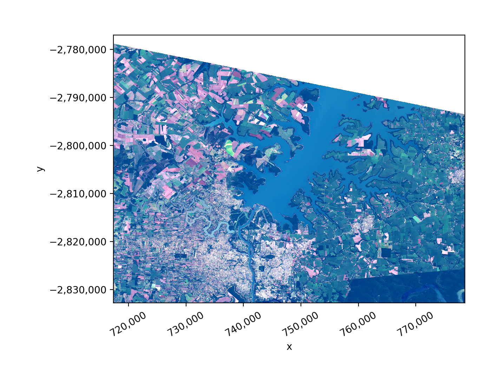
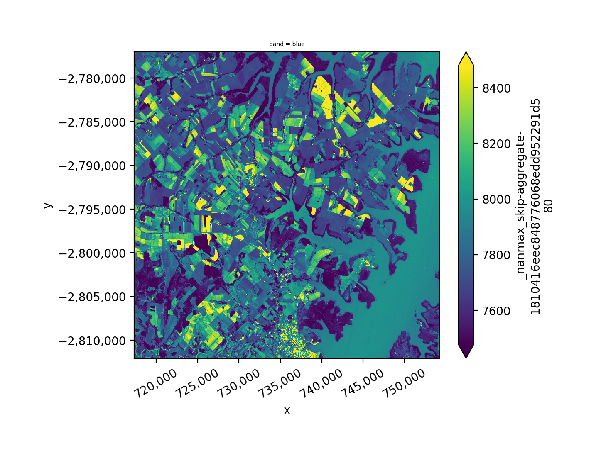
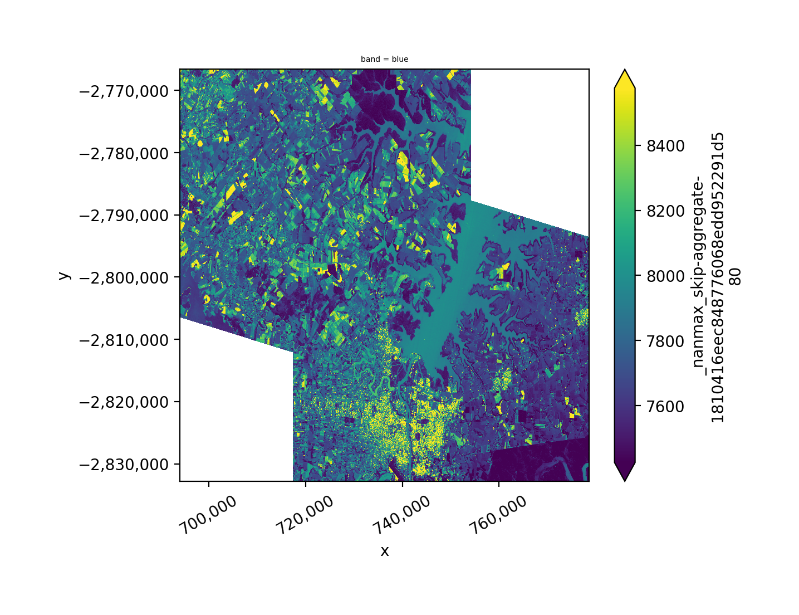
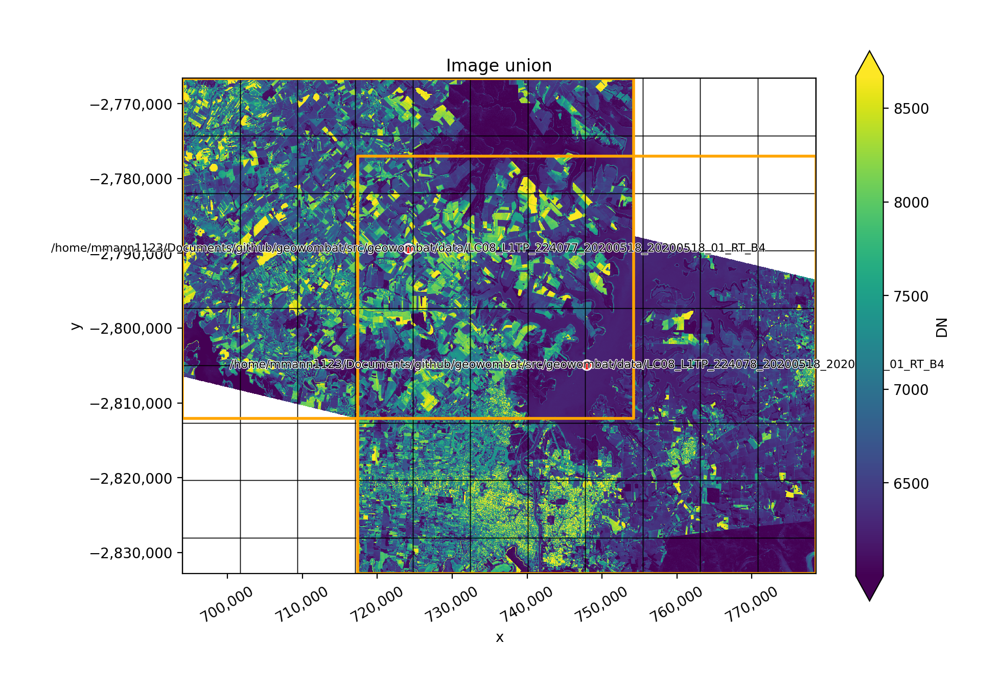
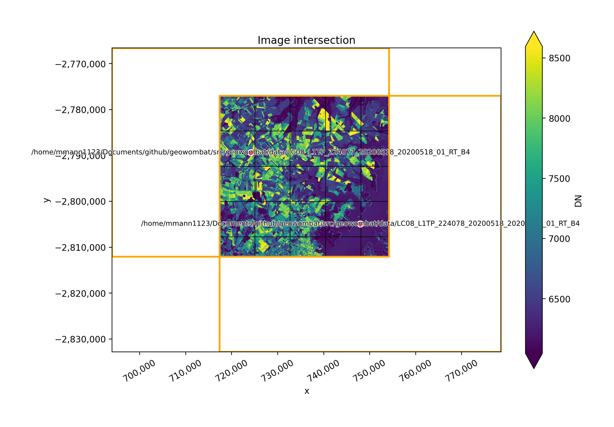
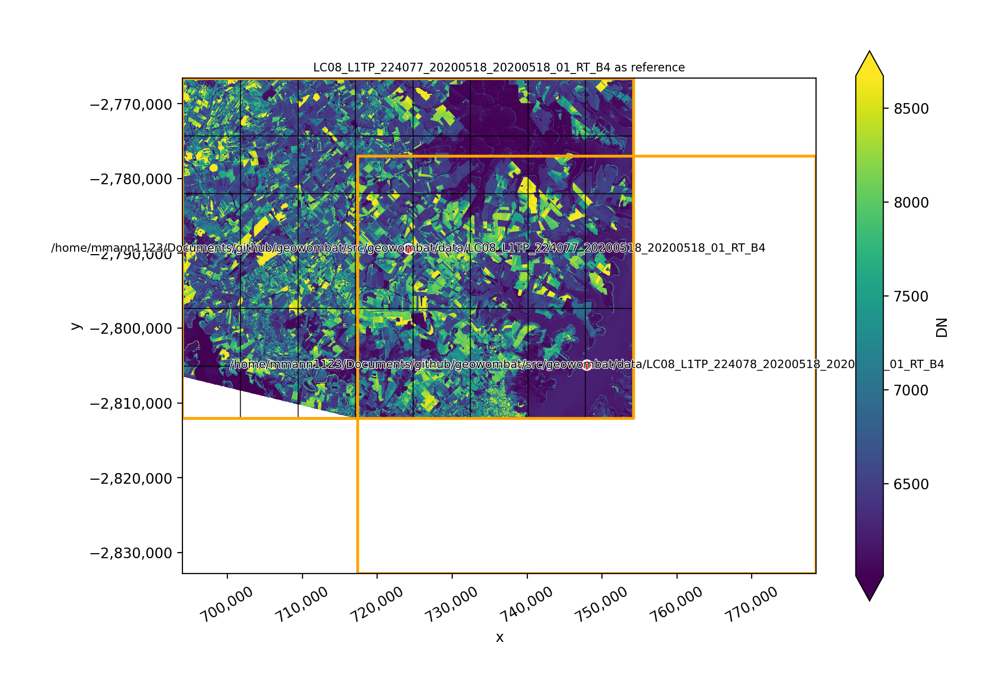
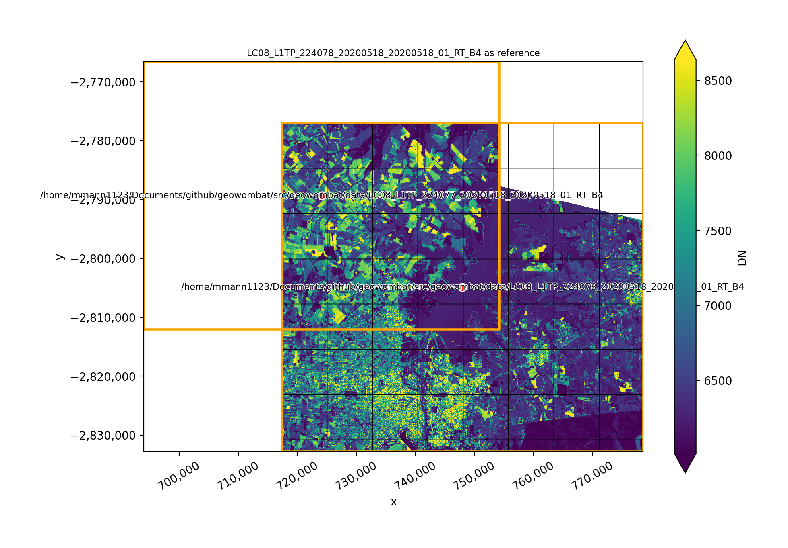

Plotting raster data#
# Import GeoWombat
In [1]: import geowombat as gw
# Load image names
In [2]: from geowombat.data import l8_224078_20200518, l8_224077_20200518_B2, l8_224078_20200518_B2
In [3]: from geowombat.data import l8_224077_20200518_B4, l8_224078_20200518_B4
In [4]: from pathlib import Path
In [5]: import matplotlib.pyplot as plt
In [6]: import matplotlib.patheffects as pe
Plot the entire array#
In [7]: fig, ax = plt.subplots(dpi=200)
In [8]: with gw.open(l8_224078_20200518) as src:
...: src.where(src != 0).sel(band=[3, 2, 1]).gw.imshow(robust=True, ax=ax)
...:
In [9]: plt.tight_layout(pad=1)

Plot the intersection of two arrays#
In [10]: fig, ax = plt.subplots(dpi=200)
In [11]: filenames = [l8_224077_20200518_B2, l8_224078_20200518_B2]
In [12]: with gw.open(
....: filenames,
....: band_names=['blue'],
....: mosaic=True,
....: bounds_by='intersection'
....: ) as src:
....: src.where(src != 0).sel(band='blue').gw.imshow(robust=True, ax=ax)
....:
In [13]: plt.tight_layout(pad=1)

Plot the union of two arrays#
In [14]: fig, ax = plt.subplots(dpi=200)
In [15]: filenames = [l8_224077_20200518_B2, l8_224078_20200518_B2]
In [16]: with gw.open(
....: filenames,
....: band_names=['blue'],
....: mosaic=True,
....: bounds_by='union'
....: ) as src:
....: src.where(src != 0).sel(band='blue').gw.imshow(robust=True, ax=ax)
....:
In [17]: plt.tight_layout(pad=1)

Setup a plot function
In [18]: def plot(bounds_by, ref_image=None, cmap='viridis'):
....: fig, ax = plt.subplots(figsize=(10, 7), dpi=200)
....: effective_bounds_by = 'reference' if ref_image is not None else bounds_by
....: with gw.config.update(ref_image=ref_image):
....: with gw.open(
....: [l8_224077_20200518_B4, l8_224078_20200518_B4],
....: band_names=['nir'],
....: chunks=256,
....: mosaic=True,
....: bounds_by=effective_bounds_by,
....: persist_filenames=True
....: ) as srca:
....: srca.where(srca != 0).sel(band='nir').gw.imshow(robust=True, cbar_kwargs={'label': 'DN'}, ax=ax)
....: srca.gw.chunk_grid.plot(color='none', edgecolor='k', ls='-', lw=0.5, ax=ax)
....: srca.gw.footprint_grid.plot(color='none', edgecolor='orange', lw=2, ax=ax)
....: for row in srca.gw.footprint_grid.itertuples(index=False):
....: ax.scatter(
....: row.geometry.centroid.x,
....: row.geometry.centroid.y,
....: s=50, color='red', edgecolor='white', lw=1
....: )
....: ax.annotate(
....: row.footprint.replace('.TIF', ''),
....: (row.geometry.centroid.x, row.geometry.centroid.y),
....: color='black',
....: size=8,
....: ha='center',
....: va='center',
....: path_effects=[pe.withStroke(linewidth=1, foreground='white')]
....: )
....: ax.set_ylim(
....: srca.gw.footprint_grid.total_bounds[1]-10,
....: srca.gw.footprint_grid.total_bounds[3]+10
....: )
....: ax.set_xlim(
....: srca.gw.footprint_grid.total_bounds[0]-10,
....: srca.gw.footprint_grid.total_bounds[2]+10
....: )
....: title = f'Image {bounds_by}' if bounds_by else str(Path(ref_image).name.split('.')[0]) + ' as reference'
....: size = 12 if bounds_by else 8
....: ax.set_title(title, size=size)
....:
Image mosaics#
The two plots below illustrate how two images can be mosaicked. The orange grids highlight the image
footprints while the black grids illustrate the xarray.DataArray chunks.
In [19]: plot('union')

In [20]: plot('intersection')

In [21]: plot(None, l8_224077_20200518_B4)

In [22]: plot(None, l8_224078_20200518_B4)
